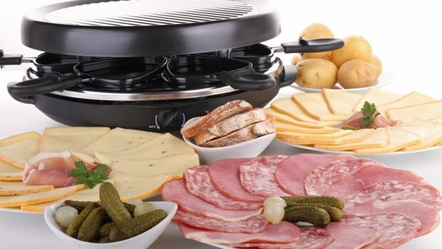

Hola bienvenidos al menu de platillos de Francia.
Platillo |
Imagen |
Informacion |
| 1-La raclette. |
 |
Originario de Suiza, esta comida fue adoptada por los franceses y se come en toda Francia regularmente. La peculiaridad de este plato es que incorpora una máquina que calienta el queso especial para derretirlo. A continuación, se mezcla con patatas y embutidos. |
|
2-Le gratin dauphinois.
|
(gratén delfines): originario de Francia (más precisamente en la región de Delfines en los Alpes franceses), es un plato horneado de patatas gratinadas cortadas en finas rodajas y mezcladas con nata fresca o leche. Además, se le suele añadir mucho queso y setas…¡qué harían los franceses sin queso! |
|
|
3-La soupe à l’oignons.
|
(sopa de cebolla): es un plato emblemático de la cocina tradicional francesa. Se inventó durante la Revolución Francesa cuando se disponía únicamente de ingredientes sencillos para cocinar. Se hace con trocitos de pan, caldo de carne y cebolla caramelizada. Y atención: ¡el tiempo de cocción no puede superar a las 2 horas! Uno de los mejores ejemplos de la comida típica de Francia, sin duda. |